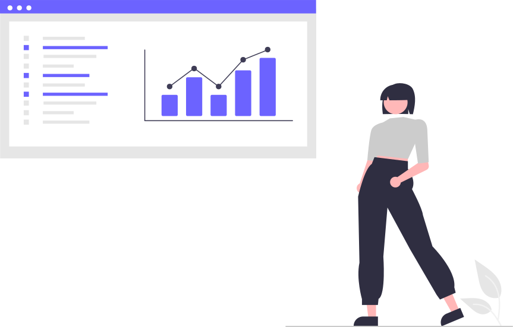

Análisis de Datos y Modelos Predictivos
Servicio de Análisis de Datos y creación de Modelos Predictivos enfocado en generar información importante para tu negocio, solucionar problemas y mejorar la toma estrategica de decisiones.
Ver másX
Análisis de Datos y Modelos Predictivos
Se realiza analisis del punto de vista estadístico, económico y econométrico.
En el análisis el foco está en dar solución a los problemas o inquetudes que tiene la empresa.
Una vez completado el análsis se levantan las bases para ofrecer un abanico de soluciones, donde el objetivo principal de las soluciones es que estas sean 100% aplicables a tu empresa.
Como herramientas para analizar la información se utilizan principalmente los software R, Python y Excel.
Automatización de Reportes
Servicio de Automatización de Reportes mediante softwares especializados, reduciendo4 la carga operativa manual en la creación de dichos reportes.
Ver másX
Automatización de reportes
Automatización de diversos tipos de reportes, disminuyendo la carga operativa manual.
Reconocemos reportería automatizable, entendemos los flujos de información, y entregamos una mejor versión de dicho reporte, 100% automatizado.
Las herramientas para realizar la automatización de reportes son R, Python, Motores de bases de datos (Sql Server, Oracle, Mysql, MongoDB, SQLite, entre otros)
Dashboards y KPI's
Diseñamos y Creamos Dashboards 100% automatizados y de fácil interacción, para visualizar la información más relevante del negocio de manera oportuna, rápida y sencilla.
Ver másX

Dashboards y KPI's
Visualización completa, amigable y útil de la información e indicadores claves de las empresas según sus necesidades y objetivos, todo mendiante Dashboards.
Ofrecemos Dashboards 100% automatizados y personalizados a tus necesidades, favoreciendo la toma de decisiones oportunas y respaldadas.
Trabajamos en las herramientas Power Bi, R y Python, para cubrir tipos de necesidades tanto descriptivas como inferenciales.
Cursos Online
Cursos Online de Estadística y Econométría, con una perspectiva aplicada a los negocios, y en distintas herramientas como Python, R y Excel.
Ver másX

Cursos Online
Con más de 5 años de experiencia realizando clases particulares a nivel universitario, con experiencia laboral en Consultoría y Bancos, ofrecemos cursos que mezclan tanto la teoría como la práctica real.
Aplicamos de forma avanzada softwares econométricos y estadísticos de primer nivel, como Excel, R, Python y PowerBi.
El enfoque principal de los cursos es aplicar conceptos teóricos a casos reales, logrando obtener conclusiones altamente respaldadas por los datos.